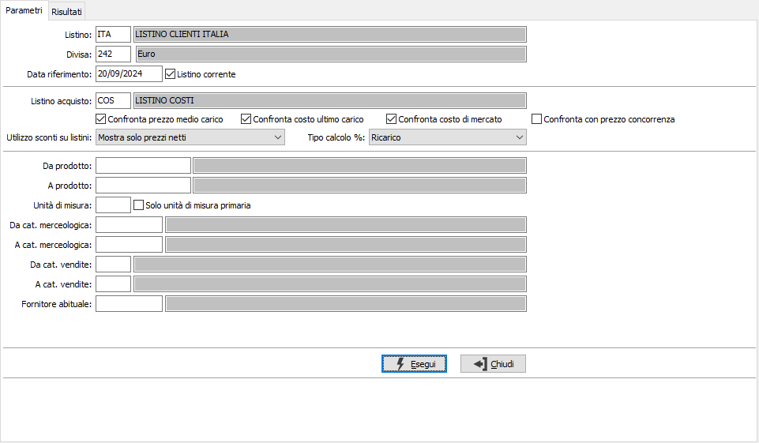
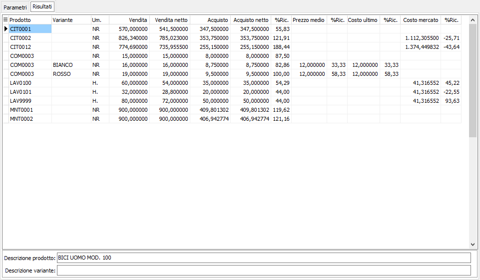

Raffronto prezzi
Il programma consente di raffrontare un listino di vendita con un listino di acquisto e con il costo medio, costo ultimo, costo di mercato del prodotto o prezzo della concorrenza (da anagrafica prodotto). Il risultato ottenuto può essere stampato oppure esportato.

Nei parametri di selezione è necessario inserire il listino di vendita, la divisa e la data di validità o l'indicazione di listino corrente; poi è possibile specificare con quali altri prezzi deve essere raffrontato il listino di vendita, se con un listino di acquisto o, se la divisa è quella di gestione, con prezzo medio, costo ultimo, costo di mercato o prezzo concorrenza; è poi possibile definire se visualizzare solo il prezzo, anche gli sconti oppure il prezzo al netto degli sconti. Il campo "Tipo calcolo %" definisce come effettuare il calcolo percentuale. I valori disponibili sono:
Incidenza: la percentuale verrà calcolata rapportando il prezzo di vendita con ciascuno dei valori presenti nelle relative colonne
Margine: la percentuale verrà calcolata rapportando la differenza tra il prezzo di vendita e ciascuno dei valori presenti nelle relative colonne con il prezzo di vendita
Ricarico: la percentuale verrà calcolata rapportando la differenza tra il prezzo di vendita e ciascuno dei valori presenti nelle relative colonne con ciascuno dei valori sopra elencati.
Gli altri limiti possono essere utilizzati per raffinare la selezioni dei prodotti all'interno del listino di vendita.

Una volta impostati i criteri di selezione viene presentato l’elenco degli articoli de listino di vendita: per ognuno vengono visualizzate le informazioni sui prezzi selezionati e le relative percentuali.
Se attiva la gestione dei prezzi per variante in configurazione, è presente la colonna Variante e la relativa descrizione nel pannello in basso.
Dalla pagina Risultati, tramite i pulsanti presenti nella Toolbar sarà possibile effettuare la stampa, o con il tasto destro del mouse esportare il risultato.